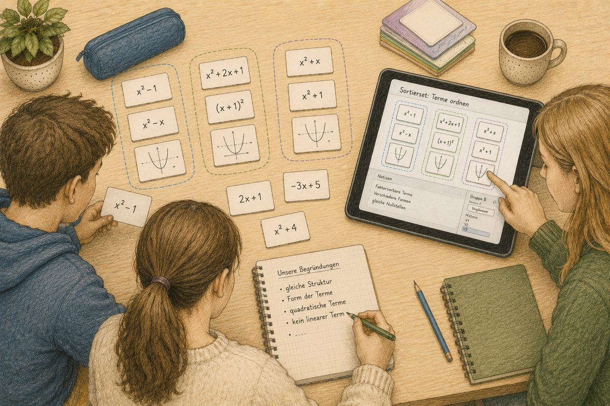
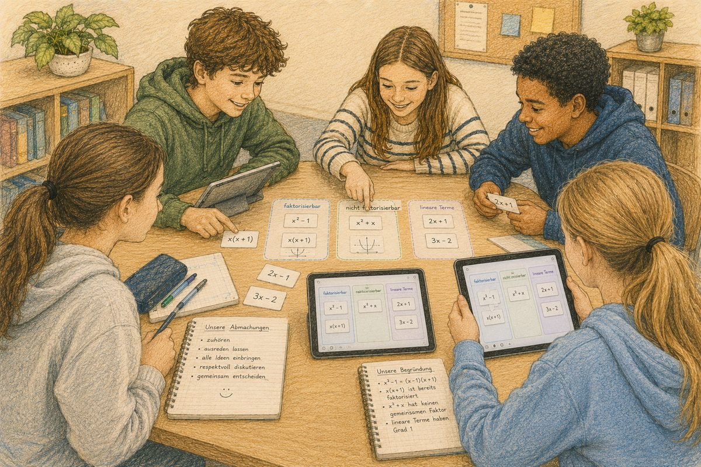
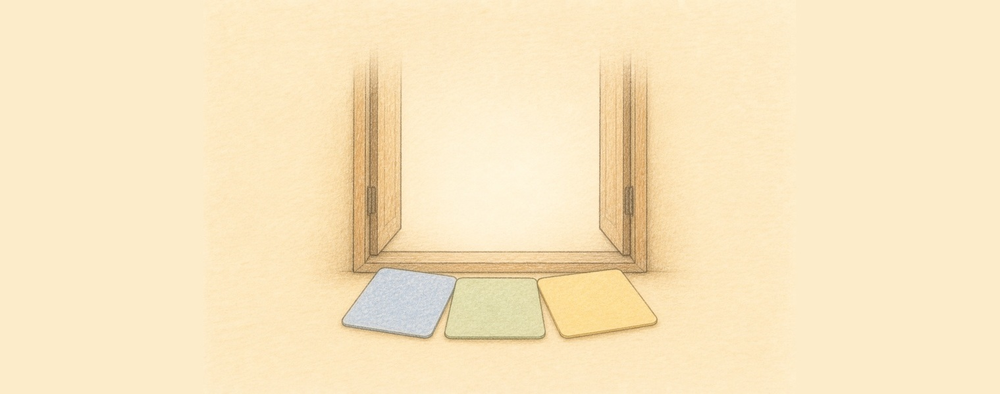
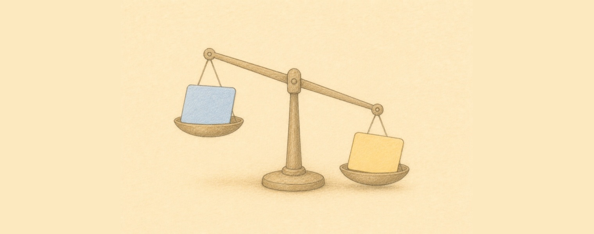
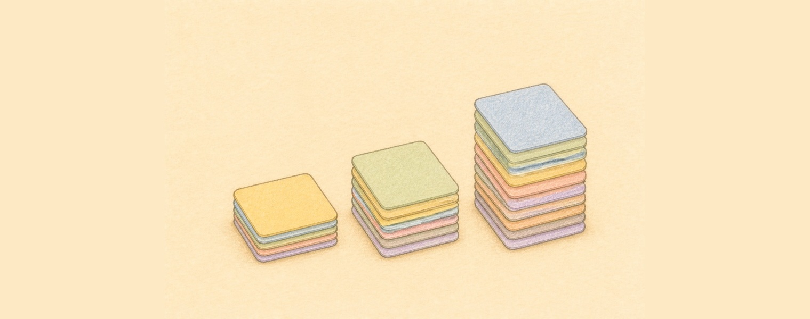
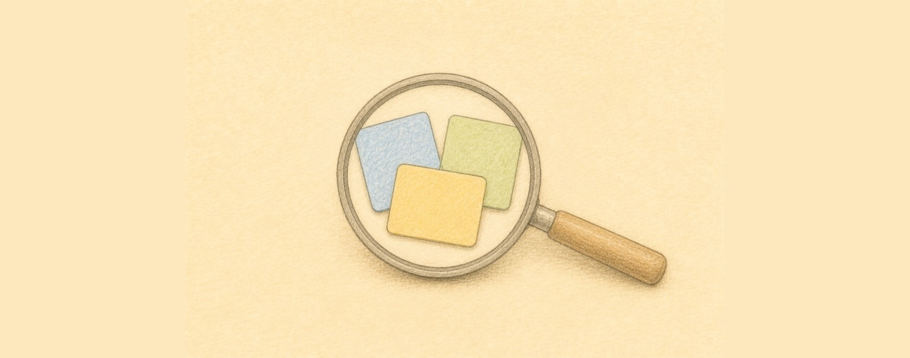
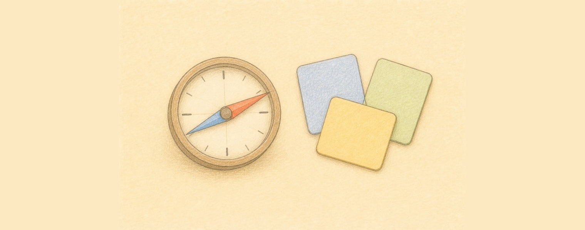
Selbstorganisiert ist die Organisationsform — ohne ständige Anleitung. Selbstreguliert ist das Kompetenzziel. Das eine folgt nicht aus dem anderen: Eine Selbstlernphase kann auch reines Abarbeiten sein. Geübt wird es nur, wenn die Aufgabe es verlangt — und das tut sie hier, ohne dass jemand es ansagt.
Ein Vorgehen wählen, bevor die erste Karte liegt. Der Auftrag gibt kein Kriterium vor — die Gruppe muss selbst eines setzen.
Passt eine Karte nicht, ist die eigene Regel an ihrer Grenze. Weil die Sortierung sichtbar daliegt, fällt das auf.
Bei Widerspruch reicht «finde ich» nicht — vor Leuten, die danebensitzen und anderer Meinung sind.
Zwei Gruppen, zwei Sortierungen. Die Frage, warum, ist nicht gestellt worden — sie stellt sich.
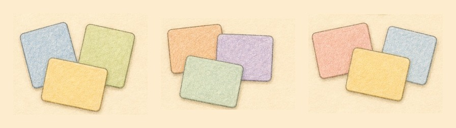
A gehört mit B zusammen, also auch B mit A. Symmetrisch — am Ende stehen Gruppen.
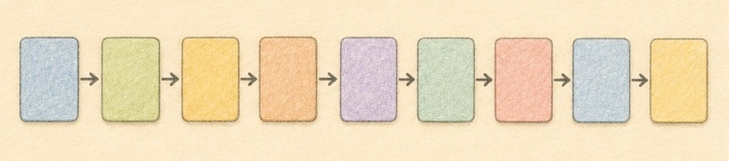
A kommt vor B, und dann nicht B vor A. Asymmetrisch — am Ende steht eine Reihenfolge.
Eure Aufgabe von vorhin: offen · vollständig · Eindeutigkeit B und C — man kann ein ganz anderes Kriterium anlegen, und der Definitionsbereich verlangt Wissen.
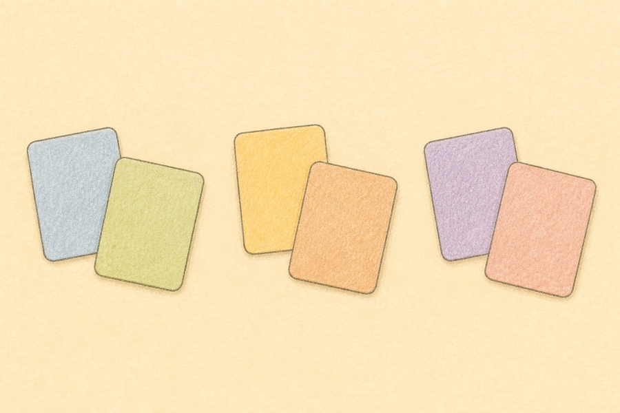
«Sortiert, wie es euch sinnvoll erscheint.»
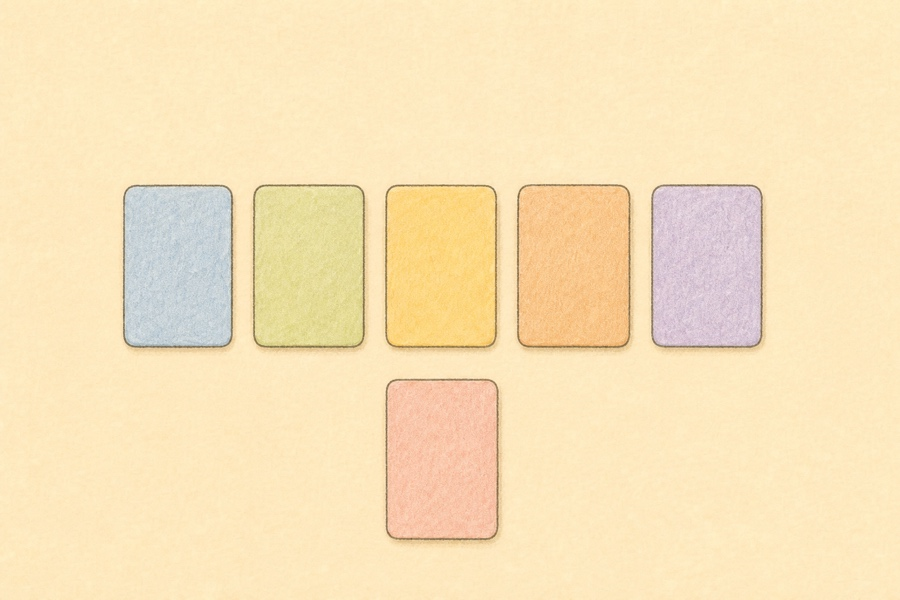
«Drei Karten, eine gehört nicht dazu — welche, und woran habt ihr es erkannt?»
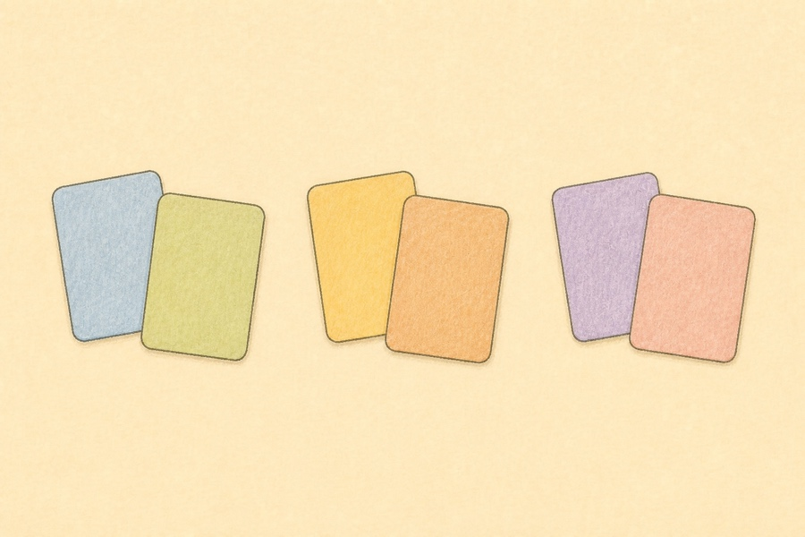
«Welche zwei beschreiben dieselbe Funktion?» — und welche nur fast?
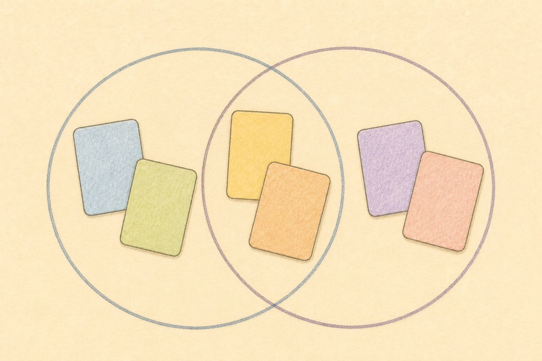
«Polynom? Überall definiert?» Zwei Kreise, und manche Karte liegt in beiden.
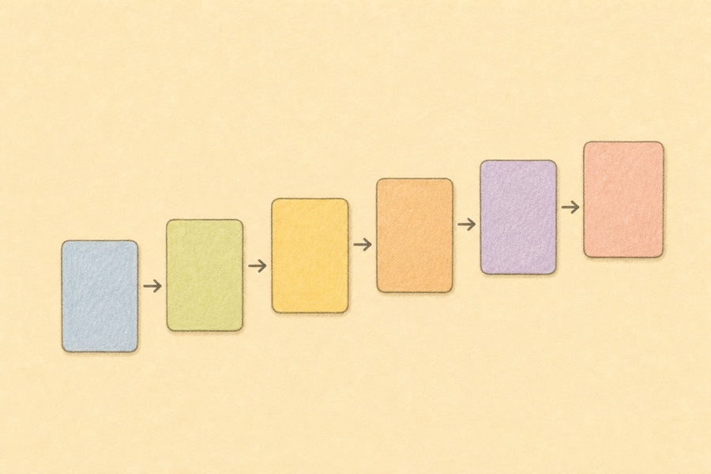
«Legt sie in eine Reihe: Welche wächst am schnellsten?»
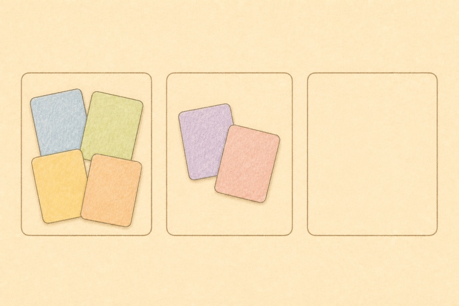
«Eine Wurzel im Term heisst, dass es kein Polynom ist.» Stimmt das?
Welche Kärtchen gehören hinein, und wie viele? Welcher Typ eignet sich wann — und welches Ziel erreiche ich womit?
In einer selbstregulierten Phase ist die Lehrperson nicht dabei. Was die Gruppen gelegt und begründet haben, muss trotzdem anschlussfähig bleiben.
Kärtchen auswählen, setzen, drucken, schneiden, sortieren — bevor überhaupt jemand etwas gelegt hat. Der Aufwand entscheidet, ob so eine Aufgabe ein zweites Mal zum Einsatz kommt.
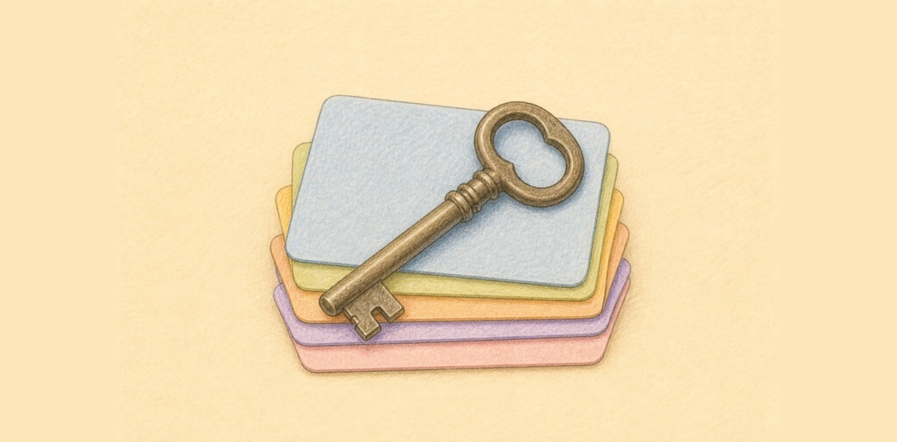
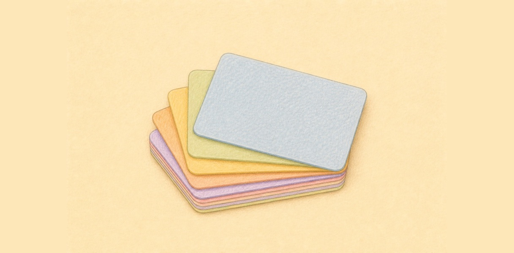
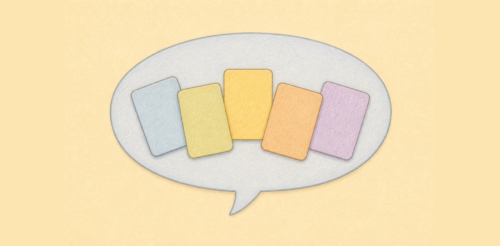
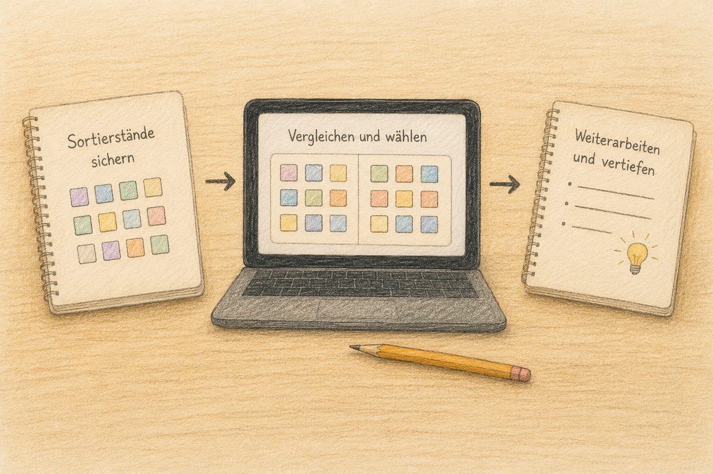
Papierkärtchen werden am Ende der Stunde eingesammelt — und damit ist die Arbeit weg.
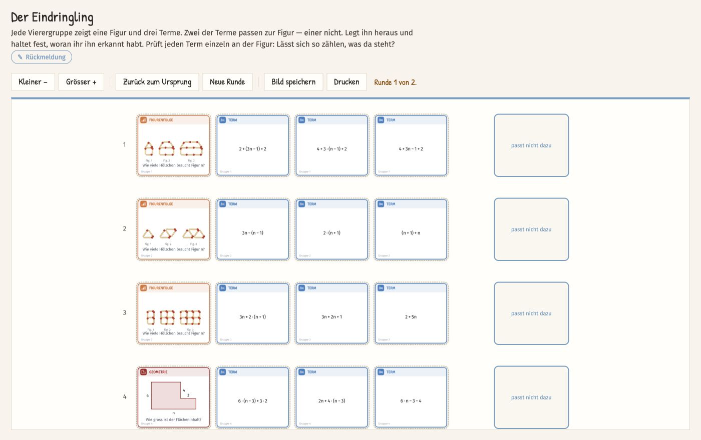
Unsere Sortieraufgaben — so, wie eine Klasse sie bekommt.
Die fertige Sortierung ist nicht das Produkt — das Gespräch darüber ist es.
Nicht im Auftrag. Nicht auf dem Brett. Nicht in den Feldnamen. Nicht in der Rückmeldung. Wer «Sortiert nach Definitionsbereich» auf den Auftrag schreibt, hat die Aufgabe schon gelöst — und die Gruppe führt nur noch aus.